Everyday environments
Implemented daypart schedule, using America/Denver operational time. These environment-only plates keep the working room coherent from dawn through lights-out. The classroom and mess hall are separate academy spaces.
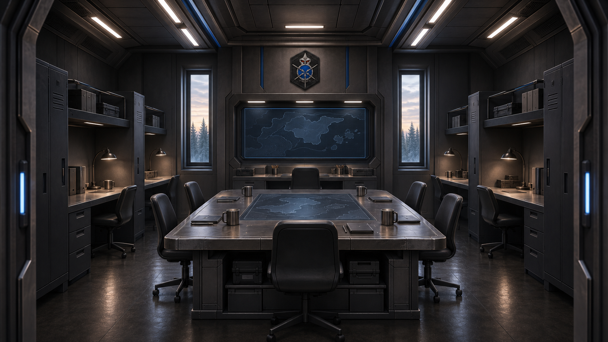
Morning preparation
Open full image ↗
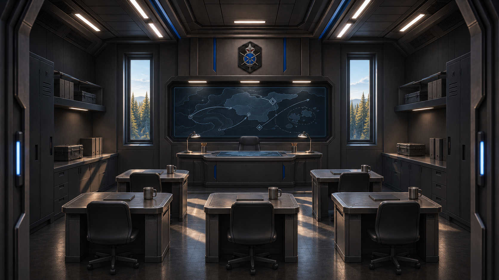
Leadership classroom
Open full image ↗
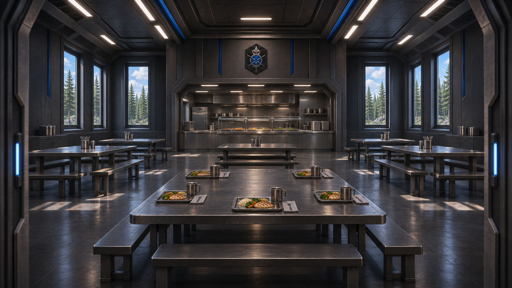
Mess hall
Open full image ↗
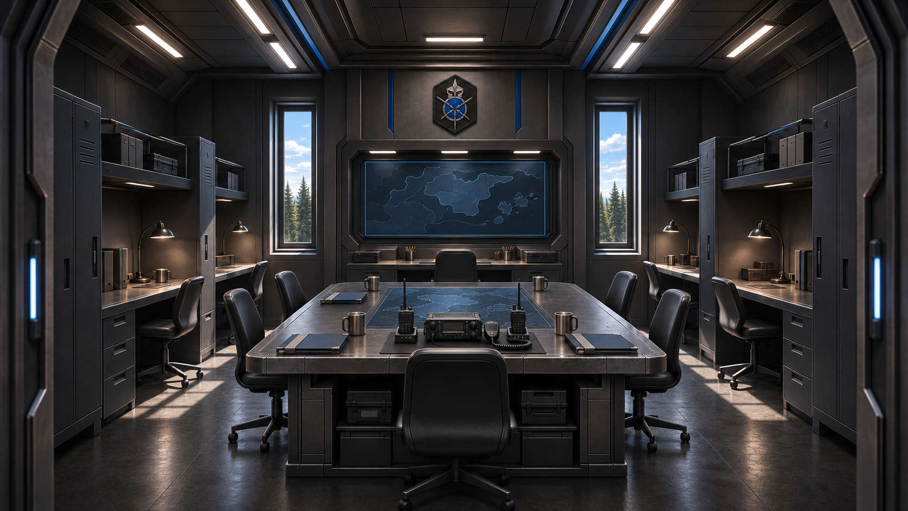
Afternoon coordination
Open full image ↗
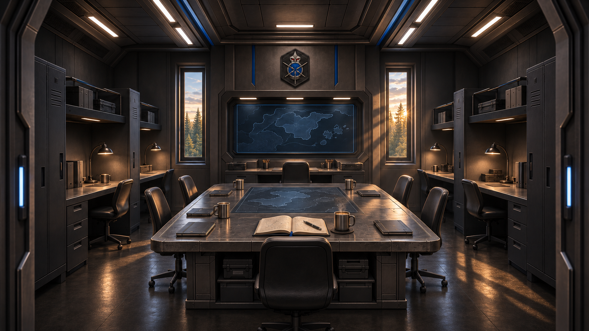
Evening study
Open full image ↗
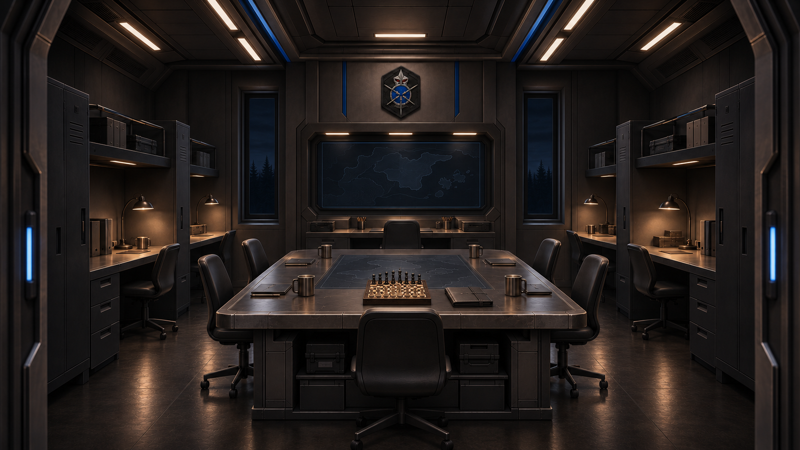
Night preparation
Open full image ↗
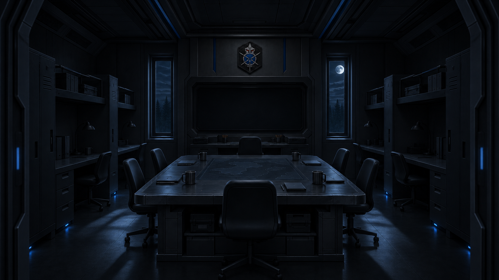
Lights out
Open full image ↗
Event scenes
First-person command perspective with Michael, Paige, Ellie, and Zoe. Existing SCP/Epsilon sleeve positions are retained; Athena appears as room insignia. Athena now appears on the wearer’s left chest, as approved. No victory or ceremony is implied by these exercise scenes.
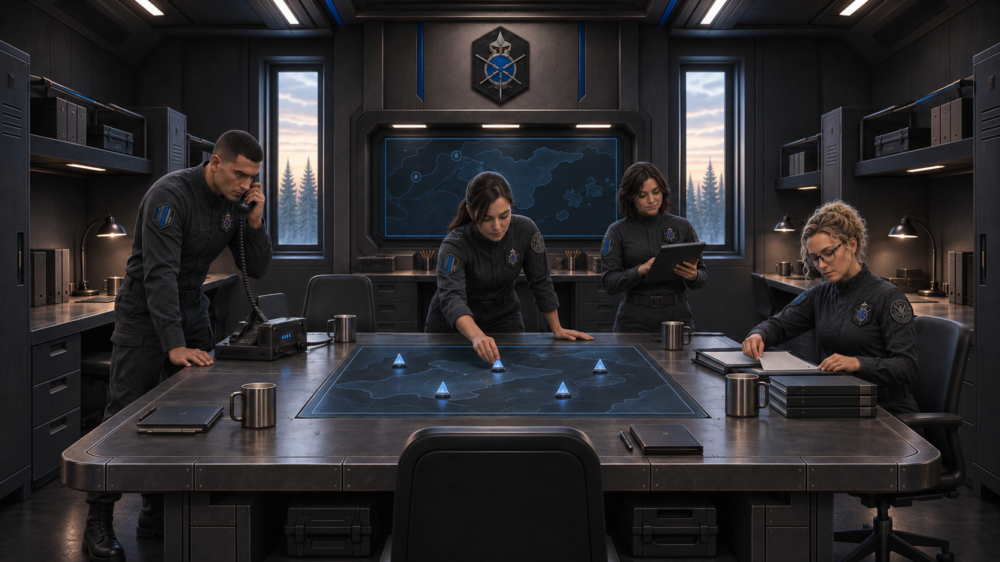
Command Post Initialization
Open full image ↗
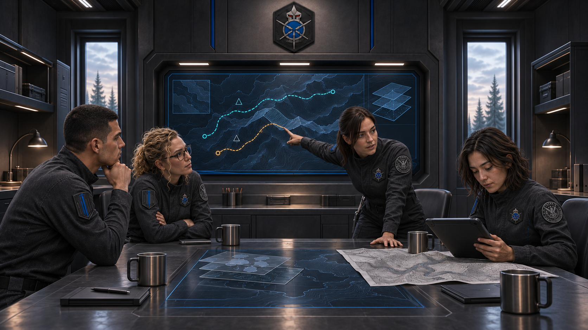
Intelligence Estimate Exercise
Open full image ↗
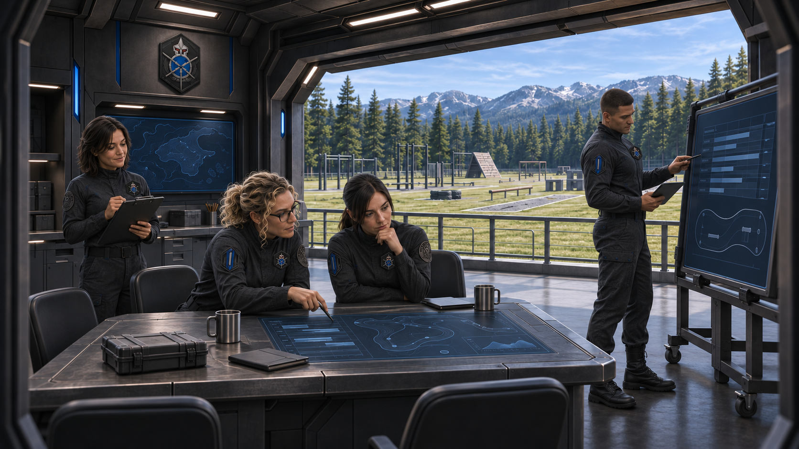
Force Readiness Assessment
Open full image ↗
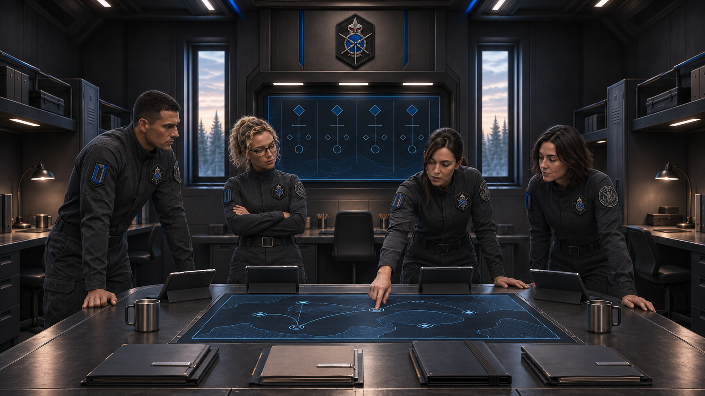
Command Readiness Review
Open full image ↗
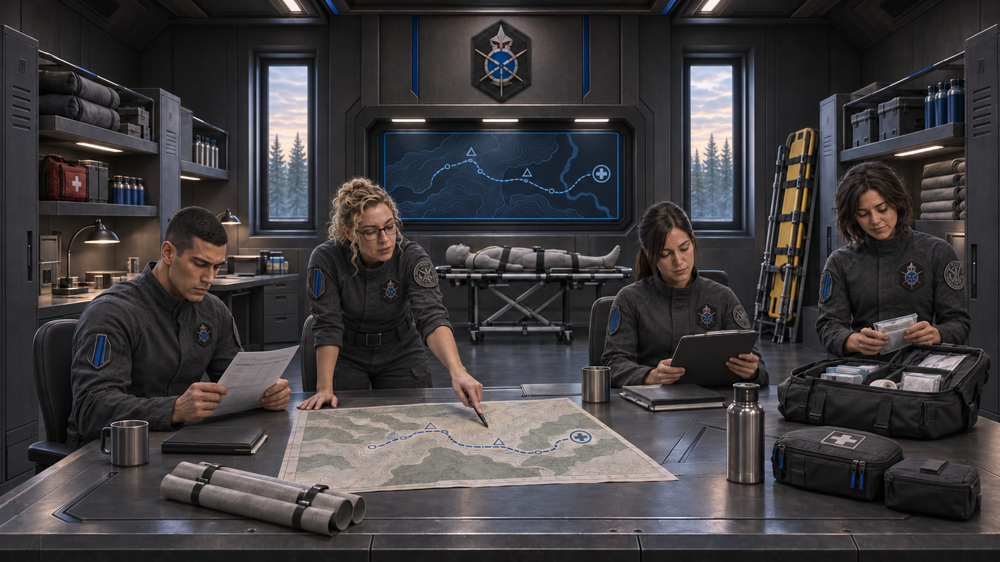
Casualty and Recovery Planning
Open full image ↗
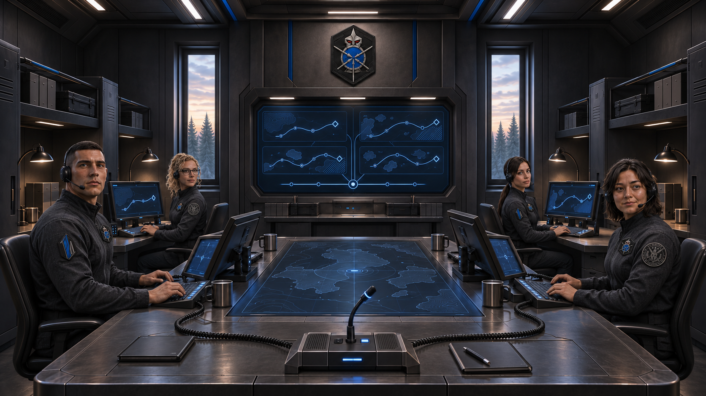
Multi-Company Coordination Exercise
Open full image ↗
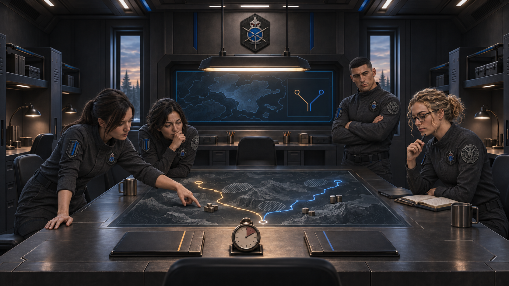
Operational Judgment Exercise
Open full image ↗
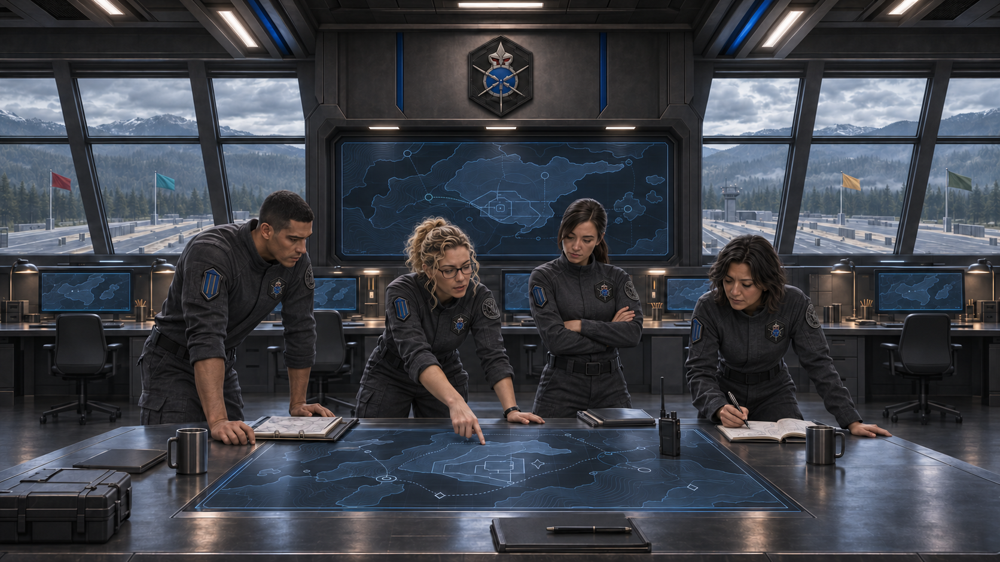
Battalion Command Assessment
Open full image ↗
SMU Classwork patch concepts
Approved family names; unnumbered master designs. No tiers or earning thresholds are implied.

Coursework Complete
Open full image ↗
Academic Cadence
Open full image ↗Review boundaries
The fifteen scene files are connected to the HUD and event catalog. They appear only when the existing phase/event gates select them; Phase III and the ceremony remain on hold. Classwork patch names and thresholds are approved. Twelve numbered tier variants are now connected to the achievement system; see CLASSWORK_ACHIEVEMENTS.md for the full contract.
Asset inventory and production notes